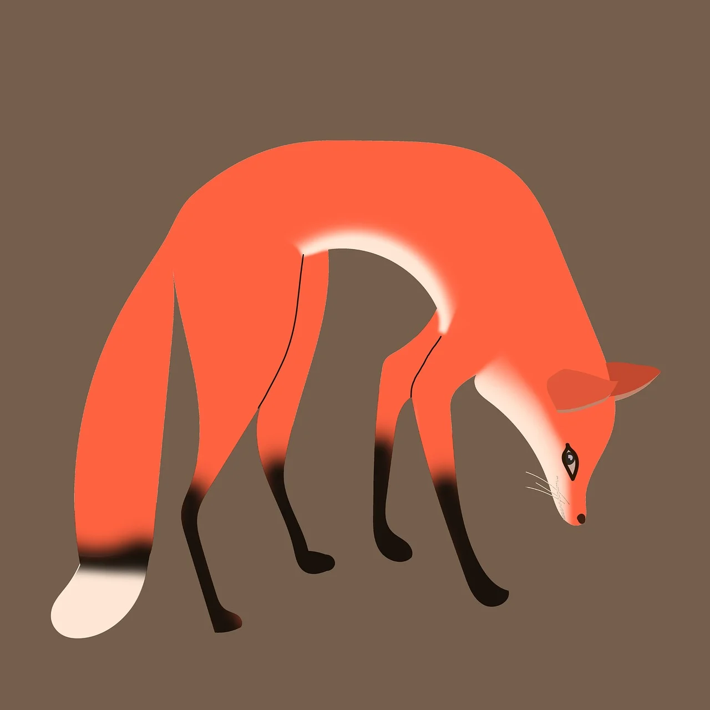

Some of my hobbies
I enjoy drawing, painting, digital art, and any sort of creative endeavors. Watercolors are my favorite medium to work with. I like computer art too. I used to make drawings in Microsoft Paint and animate them with Windows Mobvie Maker.
Being outside and getting exercise at the same time while enjoying nature is great! There are some local nature trails that I visit regularly, but it is also fun to explore new places. My favorite hiking trail is Eagle Tower in Door County, Wisconisn. I would like to visit Yellowstone Nationla Park someday.
I am a music enjoyer and listen to many different genres. I've been playing guitar since I was in middle school and it's a nice hobby for creativity, hand-eye coordination, and to keep my brain sharp. Learning new songs is always a satisfying accomplishment.
adding info for test
Mchenry County College